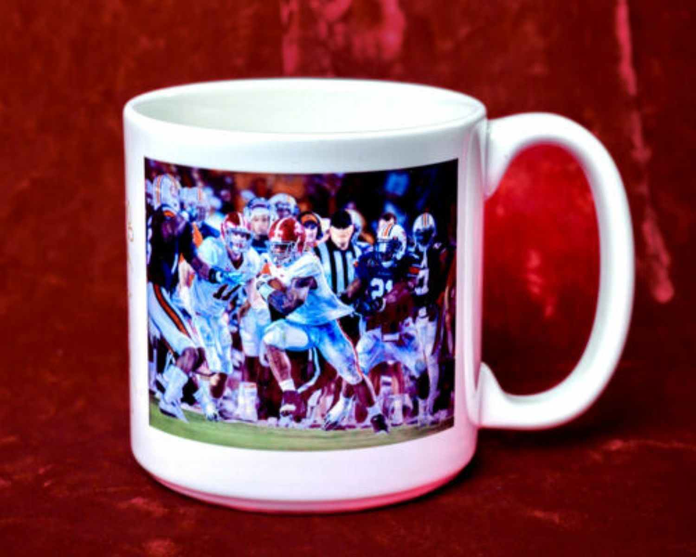
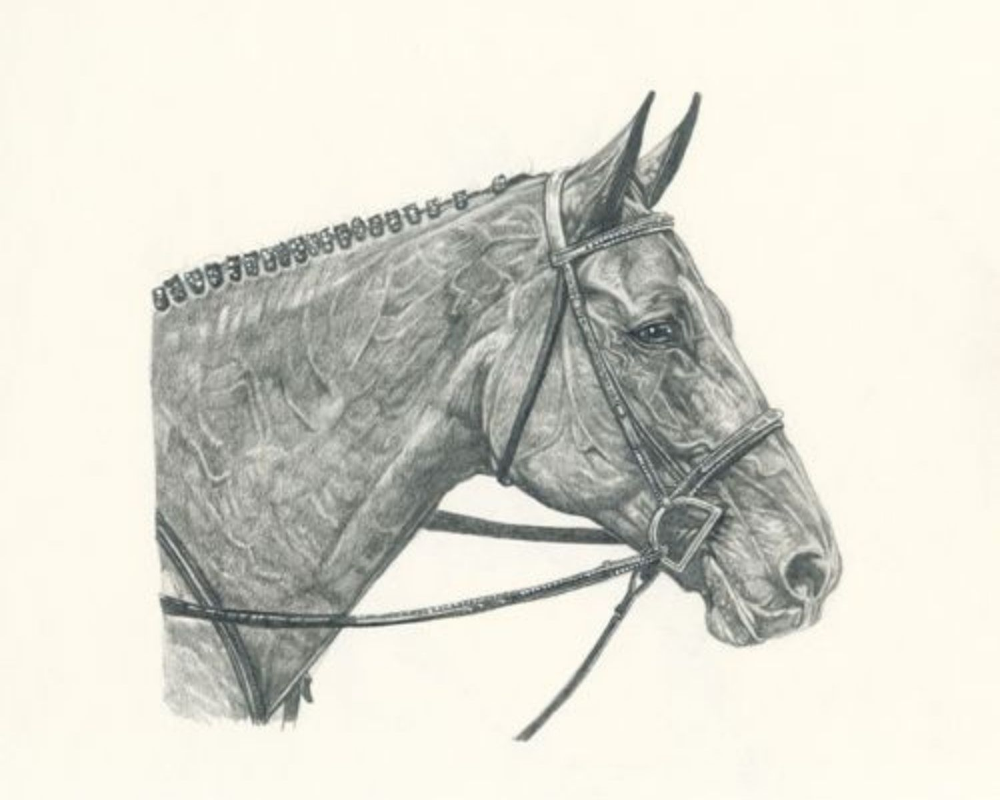
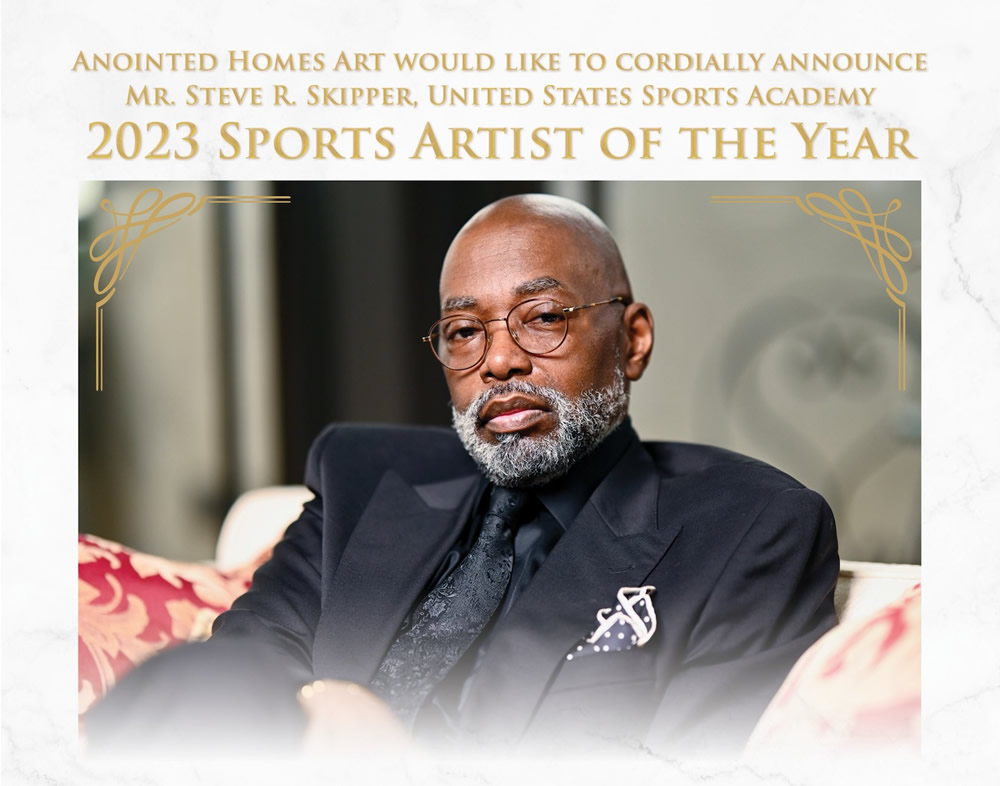

Fine Art Originals · Lithographs · Giclée Prints
Steve R. Skipper
Art. Faith. Legacy.
Internationally recognized fine artist specializing in super-realistic sports, faith, historical and portrait artwork.
Scroll
Fine Art Originals · Lithographs · Giclée Prints
Art. Faith. Legacy.
Internationally recognized fine artist specializing in super-realistic sports, faith, historical and portrait artwork.
A Historic Distinction
Recognized by Civil Rights icon Ambassador Andrew J. Young, NFL legends Bart Starr, Ozzie Newsome, Ken Stabler and Doug Williams, and University of Alabama head football coach Nick Saban.
The Collections
Six decades of storytelling through sports, faith, history and equine fine art.
A historic body of work honoring the individuals, moments and stories that helped shape a movement — recognized by Civil Rights icon Ambassador Andrew J. Young.
Explore the CollectionFrom the Studio
Shop collectible pieces featuring Steve Skipper's work.
Shop Gifts & Collectibles
Available Now
A curated selection of original works and limited-edition prints available through the Steve Skipper studio.

Featured Work · College Sports
Commemorating the 50th anniversary of the integration of the University of Alabama football team by Wilbur Jackson and John Mitchell — a tribute to Coach Paul W. Bryant's pivotal role in selecting the two athletes.
View Artwork →
“So, King Agrippa, I was not disobedient to the heavenly vision,” — Acts 26:19 AMP
The Artist
An ex-gang member and drug addict transformed by the unparalleled hands of Christ into a fine artist with international exposure and respect — with no formal training in art.
Over more than thirty years, Steve has built a career combining his love for art and sports, working in oils, pastels, acrylics and pencils, and mastering fine-art reproduction through the science of lithography and the French method of giclée.
The Craft of Super-Realism
“We have decided to stay in the ways of the Old Masters which require much care, much time, and work.”


Honors & Recognition
Recognized by the United States Sports Academy based on a unanimous selection by their Art Committee.
The award is a key part of the Academy's annual Awards of Sport program, which serves as a “Tribute to the Artist and the Athlete.” The program honors the highest accomplishments in sport and art and is held on the university campus at the American Sport Art Museum and Archives in Daphne, Alabama.
The Film
The story of an artist's journey to deliverance.
Steve's published life story covers his early life, gang involvement, salvation, deliverance, and his establishment in the fine art business.
The Anointed Homes Art Foundation
Creating opportunities for gifted young artists through fine-art scholarships — funded by original horse paintings and limited editions.
Providing fine-art scholarships for high school seniors, supporting gifted young artists nationally and internationally.
In partnership with Pastor Kris Erskine — offering motivation, materials, and the opportunity to exhibit and sell their work.
“Horses are universally loved sculptured masterpieces from the creative hands of God.”
The Print Shop
Original paintings, lithographic and giclée prints on exquisite acid-free papers or canvas — all materials guaranteed to be of the highest quality.
Shop Available PrintsHigh standards for inks and close artist supervision of the reproduction process.